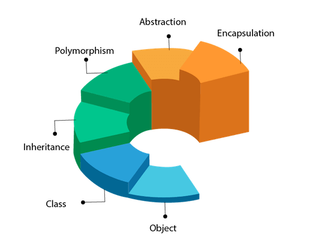
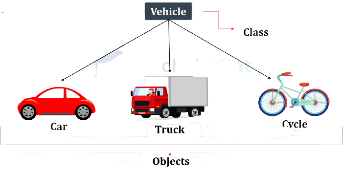

➤ Proceduran programming is about creating objects that contains both data and methods.
➤ While object-oriented programming is about creating objects that contains both data and methods.
➤ Objecte-Oriented Programming is aparadigm that provides many concepts, such as inheritance, databinding, polymorphism etc..
OOPs(Object-Oriented Programming System)

OOP in Java:
➤ Object-Oriented Programming is a methodology or paradigm to design a program using classes and objects.
➤ It simplifies software development and maintence by providing some concepts:
✔ Object
✔ Class
✔ Inheritance
✔ Polymorphism
✔ Abstraction
✔ Encapsulation
✔ Methods
✔ Message Passing
.
Abstraction
➤ Abstraction refers to providing only essential information about the data to the outside world, hiding the background details.
➤ Hiding internal details and showing functionality is known as abstraction.
➤ For example phone call, car etc. we dont't know the internal processing.
➤ In Java, we use abstract class and abstract method to achieve abstraction.
Watch the below video to know more about Abstraction
Abstract Classes and Objects:-
✔ Abstract Class: is a restricted class that cannot be used to create objects (to access it, it must be inherited from another class).
✔ Abstract Method: can only be used in an abstract class, and it does not have a body. The body is provided by the subclass (inherited from).
Watch the below video to know more about Abstract Class & Method
Example Program using abstract class and method:-
Program
import java.io.*;
import java.util.*;
// Abstract class
abstract class Animal {
// Abstract method (does not have a body)
public abstract void animalSound();
// Regular method
public void sleep() {
System.out.println("Zzz");
}
}
// Subclass (inherit from Animal)
class Pig extends Animal {
public void animalSound() {
// The body of animalSound() is provided here
System.out.println("The pig says: wee wee");
}
}
class Main {
public static void main(String[] args) {
Pig myPig = new Pig(); // Create a Pig object
myPig.animalSound();
myPig.sleep();
}
}
Output:- The pig says: wee wee
Zzz
☑ Know it's time to run your own program:-
.
Objects & Classes

Object :-
➤ Object means a real-world entity such as a pen,chair table, computer,watch,etc.